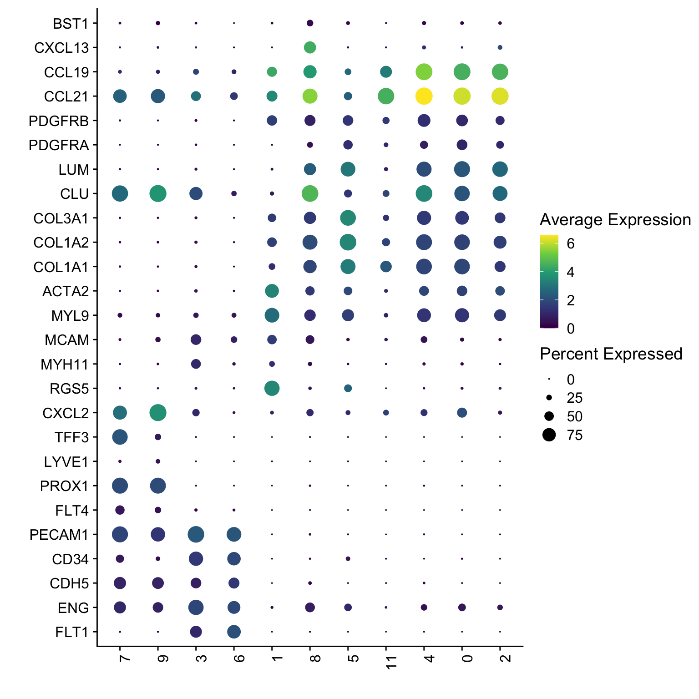

## load packages
suppressPackageStartupMessages({
library(dplyr)
library(reshape2)
library(ggplot2)
library(cowplot)
library(purrr)
library(Seurat)
library(tidyverse)
library(ggpubr)
library(runSeurat3)
library(here)
library(ggsci)
library(pheatmap)
library(scater)
})visualize marker genes all stromal cells
Load packages
load seurat object
basedir <- here()
## load seurat object from previous analysis
seurat <- readRDS(file=paste0(basedir,
"/data/AllPatWithoutCM_LNFSCMerged_seurat.rds"))
## set col palettes
colPal <- c(pal_nejm()(7),pal_futurama()(12))[1:length(levels(seurat))]
colPal <- c("#c29f2d", "#cb6021", "#893149", "#524b86", "#1f84aa",
"#d38c6e","#50a565","#242a8b","#297563","#667c63","#c94141")
names(colPal) <- levels(seurat)
colPat <- c(pal_nejm()(7),pal_futurama()(12))[1:length(unique(seurat$patient))]
names(colPat) <- unique(seurat$patient)
colCond <- c("#6692a3","#971c1c","#d17d67")
names(colCond) <- unique(seurat$cond)
colGrp <- pal_uchicago()(length(unique(seurat$grp)))
names(colGrp) <- unique(seurat$grp)
colOri <- pal_npg()(length(unique(seurat$origin)))
names(colOri) <- unique(seurat$origin)visualize data
clustering
## visualize input data
DimPlot(seurat, reduction = "umap", cols=colPal)+
theme_bw() +
theme(axis.text = element_blank(), axis.ticks = element_blank(),
panel.grid.minor = element_blank()) +
xlab("UMAP1") +
ylab("UMAP2")
DimPlot(seurat, reduction = "umap", cols=colPal, pt.size=0.5)+
theme_void()
patient
## visualize input data
DimPlot(seurat, reduction = "umap", cols=colPat, group.by = "patient")+
theme_bw() +
theme(axis.text = element_blank(), axis.ticks = element_blank(),
panel.grid.minor = element_blank()) +
xlab("UMAP1") +
ylab("UMAP2")
DimPlot(seurat, reduction = "umap", cols=colPat, group.by = "patient",
pt.size=0.5, shuffle = T)+
theme_void()
cond
## visualize input data
DimPlot(seurat, reduction = "umap", cols=colCond, group.by = "cond")+
theme_bw() +
theme(axis.text = element_blank(), axis.ticks = element_blank(),
panel.grid.minor = element_blank()) +
xlab("UMAP1") +
ylab("UMAP2")
DimPlot(seurat, reduction = "umap", cols=colCond, group.by = "cond",
pt.size=0.5, shuffle = T)+
theme_void()
grp
## visualize input data
DimPlot(seurat, reduction = "umap", cols=colGrp, group.by = "grp")+
theme_bw() +
theme(axis.text = element_blank(), axis.ticks = element_blank(),
panel.grid.minor = element_blank()) +
xlab("UMAP1") +
ylab("UMAP2")
origin
## visualize input data
DimPlot(seurat, reduction = "umap", cols=colOri, group.by = "origin")+
theme_bw() +
theme(axis.text = element_blank(), axis.ticks = element_blank(),
panel.grid.minor = element_blank()) +
xlab("UMAP1") +
ylab("UMAP2")
vis cluster marker
marker genes
seurat_markers_all <- FindAllMarkers(object = seurat, assay ="RNA",
only.pos = TRUE, min.pct = 0.25,
logfc.threshold = 0.25,
test.use = "wilcox")avg heatmap
cluster <- levels(seurat)
selGenesAll <- seurat_markers_all %>% group_by(cluster) %>%
top_n(-15, p_val_adj) %>%
top_n(15, avg_log2FC)
selGenesAll <- selGenesAll %>% mutate(geneIDval=gsub("^.*\\.", "", gene)) %>% filter(nchar(geneIDval)>1)
Idents(seurat) <- seurat$RNA_snn_res.0.25
pOut <- avgHeatmap(seurat = seurat, selGenes = selGenesAll,
colVecIdent = colPal,
ordVec=levels(seurat),
gapVecR=NULL, gapVecC=NULL,cc=FALSE,
cr=T, condCol=F)
write table
write.table(seurat_markers_all,
file=paste0(basedir,
"/data/AllPatWithoutCM_LNFSCMerged_markerGenes.txt"),
row.names = FALSE, col.names = TRUE, quote = FALSE, sep = "\t")vis selected stroma marker
genes <- data.frame(gene=rownames(seurat)) %>%
mutate(geneID=gsub("^.*\\.", "", gene))
selGenesAll <- read_tsv(file = paste0(basedir,
"/data/overallStromaMarker.txt")) %>%
left_join(., genes, by = "geneID")
selGenesAll <- selGenesAll %>% filter(!gene == "ENSG00000232995.RGS5")
Idents(seurat) <- seurat$RNA_snn_res.0.25
pOut <- avgHeatmap(seurat = seurat, selGenes = selGenesAll,
colVecIdent = colPal,
ordVec=levels(seurat),
gapVecR=NULL, gapVecC=NULL,cc=T,
cr=F, condCol=F)
Dotplot
DotPlot(seurat, assay="RNA", features = selGenesAll$gene, scale =T,
cluster.idents = T) +
scale_color_viridis_c() +
coord_flip() +
theme(axis.text.x = element_text(angle = 90, hjust = 1)) +
scale_x_discrete(breaks=selGenesAll$gene, labels=selGenesAll$geneID) +
xlab("") + ylab("")DotPlot(seurat, assay="RNA", features = selGenesAll$gene, scale =F,
cluster.idents = T) +
scale_color_viridis_c() +
coord_flip() +
theme(axis.text.x = element_text(angle = 90, hjust = 1)) +
scale_x_discrete(breaks=selGenesAll$gene, labels=selGenesAll$geneID) +
xlab("") + ylab("")
selGenesAll <- selGenesAll %>% filter(!geneID == "CCL21")
DotPlot(seurat, assay="RNA", features = selGenesAll$gene, scale =F,
cluster.idents = T) +
scale_color_gradientn(colors=colorRampPalette(c(viridis::viridis(12),"#FDE725FF"))(50)) +
coord_flip() +
theme(axis.text.x = element_text(angle = 90, hjust = 1)) +
scale_x_discrete(breaks=selGenesAll$gene, labels=selGenesAll$geneID) +
xlab("") + ylab("")session info
sessionInfo()R version 4.3.0 (2023-04-21)
Platform: x86_64-apple-darwin20 (64-bit)
Running under: macOS Ventura 13.4.1
Matrix products: default
BLAS: /Library/Frameworks/R.framework/Versions/4.3-x86_64/Resources/lib/libRblas.0.dylib
LAPACK: /Library/Frameworks/R.framework/Versions/4.3-x86_64/Resources/lib/libRlapack.dylib; LAPACK version 3.11.0
locale:
[1] en_US.UTF-8/en_US.UTF-8/en_US.UTF-8/C/en_US.UTF-8/en_US.UTF-8
time zone: Europe/Berlin
tzcode source: internal
attached base packages:
[1] stats4 stats graphics grDevices utils datasets methods base
other attached packages:
[1] scater_1.28.0 scuttle_1.10.3 SingleCellExperiment_1.22.0
[4] SummarizedExperiment_1.30.2 Biobase_2.60.0 GenomicRanges_1.52.1
[7] GenomeInfoDb_1.36.4 IRanges_2.36.0 S4Vectors_0.40.1
[10] BiocGenerics_0.48.0 MatrixGenerics_1.12.3 matrixStats_1.2.0
[13] pheatmap_1.0.12 ggsci_3.0.0 here_1.0.1
[16] runSeurat3_0.1.0 ggpubr_0.6.0 lubridate_1.9.3
[19] forcats_1.0.0 stringr_1.5.1 readr_2.1.5
[22] tidyr_1.3.1 tibble_3.2.1 tidyverse_2.0.0
[25] Seurat_5.0.1 SeuratObject_5.0.1 sp_2.1-3
[28] purrr_1.0.2 cowplot_1.1.3 ggplot2_3.4.4
[31] reshape2_1.4.4 dplyr_1.1.4
loaded via a namespace (and not attached):
[1] RcppAnnoy_0.0.22 splines_4.3.0 later_1.3.2
[4] bitops_1.0-7 polyclip_1.10-6 fastDummies_1.7.3
[7] lifecycle_1.0.4 rstatix_0.7.2 rprojroot_2.0.4
[10] vroom_1.6.5 globals_0.16.2 lattice_0.22-5
[13] MASS_7.3-60.0.1 backports_1.4.1 magrittr_2.0.3
[16] limma_3.56.2 plotly_4.10.4 rmarkdown_2.25
[19] yaml_2.3.8 httpuv_1.6.14 sctransform_0.4.1
[22] spam_2.10-0 spatstat.sparse_3.0-3 reticulate_1.35.0
[25] pbapply_1.7-2 RColorBrewer_1.1-3 abind_1.4-5
[28] zlibbioc_1.46.0 Rtsne_0.17 RCurl_1.98-1.14
[31] GenomeInfoDbData_1.2.10 ggrepel_0.9.5 irlba_2.3.5.1
[34] listenv_0.9.1 spatstat.utils_3.0-4 goftest_1.2-3
[37] RSpectra_0.16-1 spatstat.random_3.2-2 fitdistrplus_1.1-11
[40] parallelly_1.37.0 DelayedMatrixStats_1.22.6 leiden_0.4.3.1
[43] codetools_0.2-19 DelayedArray_0.26.7 tidyselect_1.2.0
[46] farver_2.1.1 viridis_0.6.5 ScaledMatrix_1.8.1
[49] spatstat.explore_3.2-6 jsonlite_1.8.8 BiocNeighbors_1.18.0
[52] ellipsis_0.3.2 progressr_0.14.0 ggridges_0.5.6
[55] survival_3.5-8 tools_4.3.0 ica_1.0-3
[58] Rcpp_1.0.12 glue_1.7.0 gridExtra_2.3
[61] xfun_0.42 withr_3.0.0 fastmap_1.1.1
[64] fansi_1.0.6 rsvd_1.0.5 digest_0.6.34
[67] timechange_0.3.0 R6_2.5.1 mime_0.12
[70] colorspace_2.1-0 scattermore_1.2 tensor_1.5
[73] spatstat.data_3.0-4 utf8_1.2.4 generics_0.1.3
[76] data.table_1.15.0 httr_1.4.7 htmlwidgets_1.6.4
[79] S4Arrays_1.0.6 uwot_0.1.16 pkgconfig_2.0.3
[82] gtable_0.3.4 lmtest_0.9-40 XVector_0.40.0
[85] htmltools_0.5.7 carData_3.0-5 dotCall64_1.1-1
[88] scales_1.3.0 png_0.1-8 knitr_1.45
[91] rstudioapi_0.15.0 tzdb_0.4.0 nlme_3.1-164
[94] zoo_1.8-12 KernSmooth_2.23-22 vipor_0.4.7
[97] parallel_4.3.0 miniUI_0.1.1.1 pillar_1.9.0
[100] grid_4.3.0 vctrs_0.6.5 RANN_2.6.1
[103] promises_1.2.1 BiocSingular_1.16.0 car_3.1-2
[106] beachmat_2.16.0 xtable_1.8-4 cluster_2.1.6
[109] beeswarm_0.4.0 evaluate_0.23 cli_3.6.2
[112] compiler_4.3.0 rlang_1.1.3 crayon_1.5.2
[115] future.apply_1.11.1 ggsignif_0.6.4 labeling_0.4.3
[118] ggbeeswarm_0.7.2 plyr_1.8.9 stringi_1.8.3
[121] BiocParallel_1.34.2 viridisLite_0.4.2 deldir_2.0-2
[124] munsell_0.5.0 lazyeval_0.2.2 spatstat.geom_3.2-8
[127] Matrix_1.6-5 RcppHNSW_0.6.0 hms_1.1.3
[130] patchwork_1.2.0 bit64_4.0.5 sparseMatrixStats_1.12.2
[133] future_1.33.1 shiny_1.8.0 ROCR_1.0-11
[136] igraph_2.0.2 broom_1.0.5 bit_4.0.5 date()[1] "Tue Mar 5 16:54:28 2024"